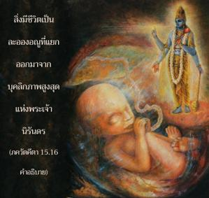

มีชีวิตอยู่สองประเภท ผิดพลาด และไม่ผิดพลาด ในโลกวัตถุทุกชีวิตผิดพลาด และในโลกทิพย์ทุกชีวิตไม่ผิดพลาด

ดังที่ได้อธิบายไว้แล้วว่าองค์ภควานฺในรูปอวตาร วฺยาสเทว ทรงรวบรวม เวทานฺต-สูตฺร ณ ที่นี้ พระองค์ทรงให้ข้อสรุปของ เวทานฺต-สูตฺร โดยตรัสว่า สิ่งมีชีวิตซึ่งมีจำนวนนับไม่ถ้วนแบ่งออกเป็นสองกลุ่ม คือ กลุ่มที่ผิดพลาด และกลุ่มที่ไม่ผิดพลาด สิ่งมีชีวิตเป็นละอองอณูที่แยกออกมาจากบุคลิกภาพสูงสุดแห่งพระเจ้านิรันดร เมื่อมาสัมผัสกับโลกวัตถุ เรียกว่า ชีว-ภูต ได้ให้คำสันสกฤตตรงนี้ กฺษรห์ สรฺวาณิ ภูตานิ หมายความว่า พวกนี้ผิดพลาด อย่างไรก็ดี พวกที่เป็นหนึ่งเดียวกับองค์ภควานฺ เรียกว่า ไม่ผิดพลาด ความเป็นหนึ่งเดียวกันไม่ได้หมายความว่าไม่ได้เป็นปัจเจกบุคคล แต่ไม่มีความแตกแยกกัน ทั้งหมดนั้นยอมรับจุดมุ่งหมายแห่งการสร้าง แน่นอนว่าในโลกทิพย์ไม่มีการสร้าง แต่เนื่องจากบุคลิกภาพสูงสุดแห่งพระเจ้าทรงเป็นแหล่งกำเนิดของทุกสิ่งทุกอย่างที่ออกมา ดังที่ได้กล่าวไว้ใน เวทานฺต-สูตฺร จึงได้อธิบายแนวคิดนั้น
ตามข้อความของบุคลิกภาพสูงสุดแห่งพระเจ้าองค์ ศฺรีกฺฤษฺณ ว่ามีสิ่งมีชีวิตอยู่สองกลุ่ม คัมภีร์พระเวทให้หลักฐานนี้จึงไม่มีข้อสงสัย สิ่งมีชีวิตดิ้นรนต่อสู้ในโลกนี้ด้วยจิตใจและประสาทสัมผัสทั้งห้า มีร่างกายวัตถุที่มีการเปลี่ยนแปลง ตราบใดที่สิ่งมีชีวิตอยู่ในพันธสภาวะร่างกายของเขาเปลี่ยนแปลงเนื่องจากมาสัมผัสกับวัตถุเพราะวัตถุเปลี่ยนแปลง ดังนั้นสิ่งมีชีวิตจึงดูเหมือนว่าเปลี่ยนแปลง แต่ในโลกทิพย์ร่างกายไม่ได้ทำมาจากวัตถุ ดังนั้น จึงไม่มีการเปลี่ยนแปลง ในโลกวัตถุสิ่งมีชีวิตผ่านการเปลี่ยนแปลงหกขั้นตอน คือ เกิด เจริญเติบโต คงอยู่ระยะเวลาหนึ่ง สืบพันธุ์ หดตัวลง และสูญสลายไป ขั้นตอนเหล่านี้คือการเปลี่ยนแปลงของร่างวัตถุ แต่ในโลกทิพย์ร่างกายไม่เปลี่ยนแปลง ไม่มีความชรา ไม่มีการเกิด ไม่มีการตาย ทั้งหมดเป็นอยู่ในความเป็นหนึ่ง กฺษรห์ สรฺวาณิ ภูตานิ สิ่งมีชีวิตใดๆ ที่มาสัมผัสกับวัตถุเริ่มต้นจากดวงชีวิตแรก คือ พระพรหมลงไปจนถึงมดตัวเล็กๆ ร่างกายต้องเปลี่ยนแปลง ฉะนั้น พวกเขาทั้งหมดจึงมีความผิดพลาด อย่างไรก็ดีในโลกทิพย์ทุกชีวิตเป็นอิสระในความเป็นหนึ่งอยู่เสมอ